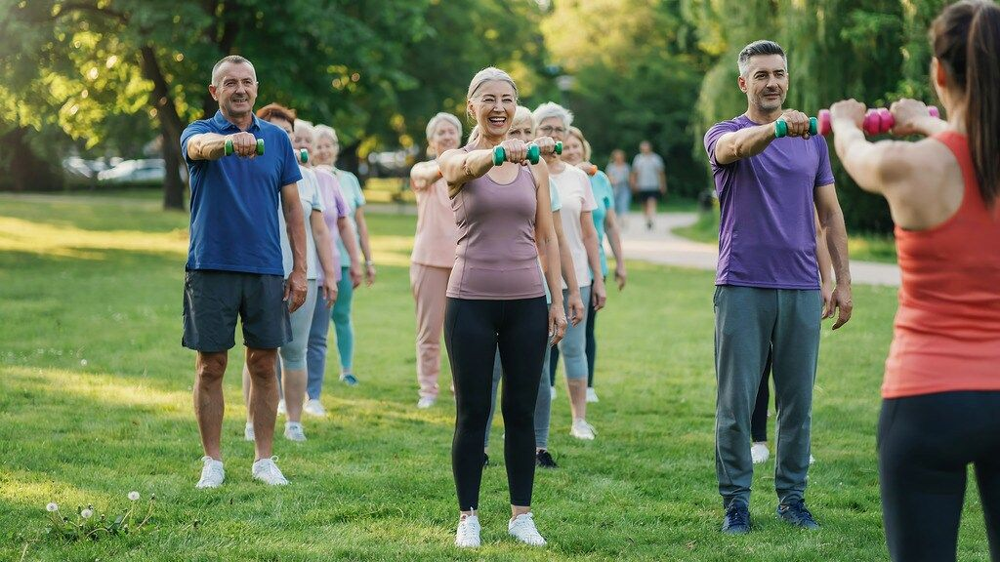
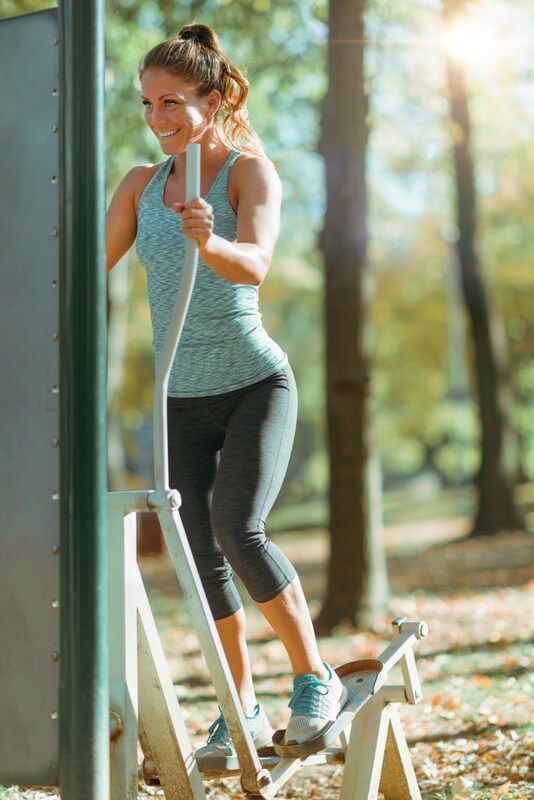
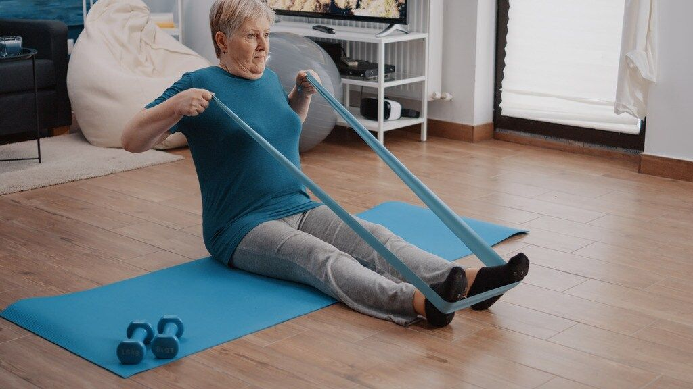
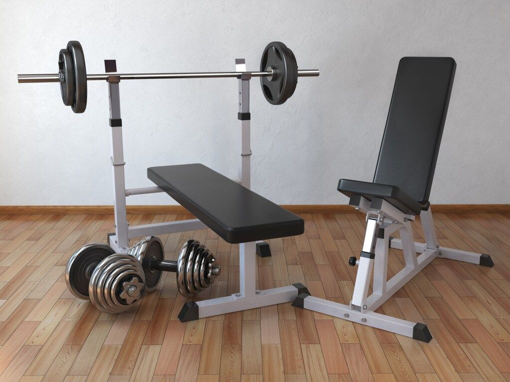
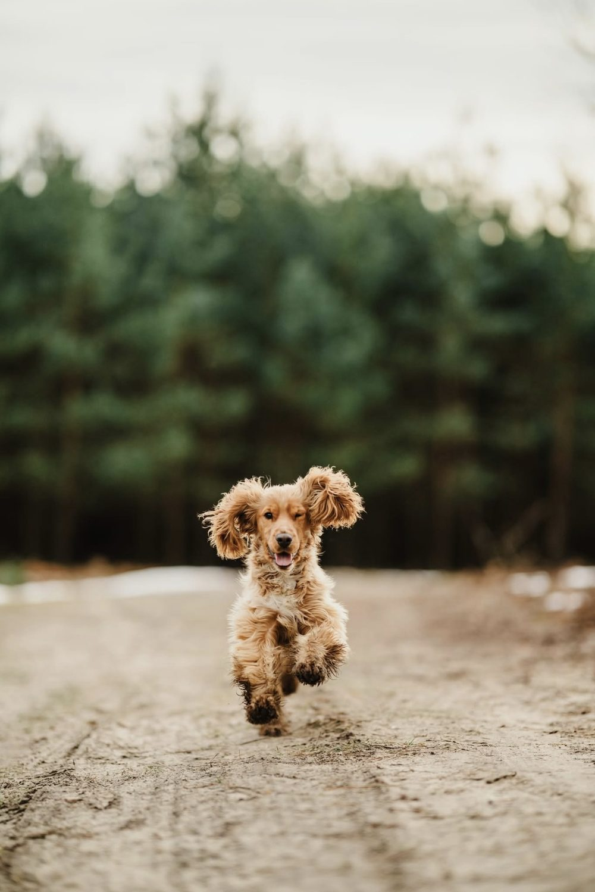
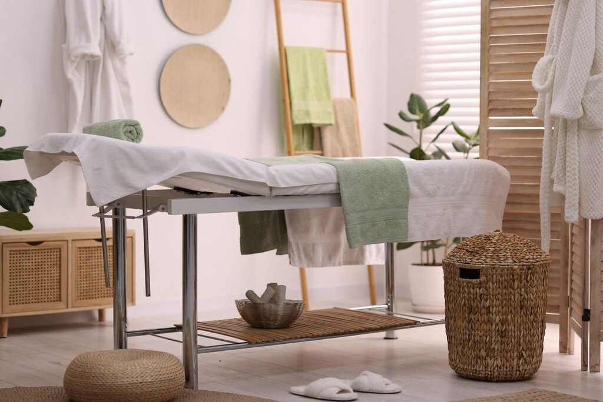
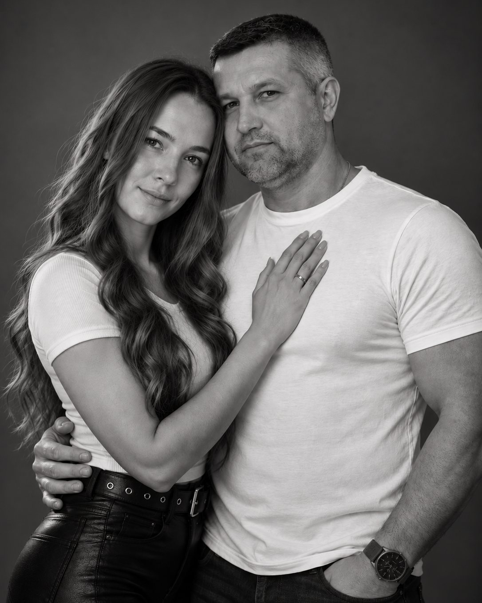

Więcej ruchu. Więcej natury. Lepsze samopoczucie.
Jestem Paweł, trener personalny. Pomagam znaleźć miejsce na aktywność w zwykłym życiu — w parku, na siłowni plenerowej lub we własnym domu. Dopasujemy trening do Twoich możliwości, czasu i budżetu.
Bez karnetu i długich dojazdów. Blisko domu, w Twoim tempie.
Możesz też umówić się na masaż u mojej żony Doroty, wykwalifikowanej masażystki. Więcej o masażach

Moje podejście
Trening ma pasować do Twojego życia.
Nie musisz od razu kupować drogiego sprzętu ani przestawiać całego dnia. Zaczynamy od tego, co już masz: kawałka podłogi, najbliższego parku i czasu, który realnie możesz poświęcić.
Jeśli pracujesz przy biurku, trening na zewnątrz to okazja, żeby się poruszać, złapać trochę świeżego powietrza i zmienić otoczenie po kilku godzinach przed ekranem.
Gdy pogoda nie sprzyja albo wolisz zostać w domu, masz pod ręką zestaw ćwiczeń dopasowany do Ciebie. Plan dostosowuje się do Twojego tygodnia, a odpoczynek jest jego normalną częścią.
Przykładowy tydzień
Wybierz sytuację i zobacz, jak zmienia się plan.
- Poniedziałek:Odpoczynek
- Wtorek:Park: trening z masą ciała
- Środa:Spacer
- Piątek:Odpoczynek
- Sobota:Rower albo dłuższy spacer
- Niedziela:Odpoczynek
Dwa treningi na świeżym powietrzu, trochę ruchu dla przyjemności i dni odpoczynku.
To tylko przykład. Liczbę i rodzaj treningów ustalamy indywidualnie.
Gdzie możemy trenować?
Treningi prowadzę w Stalowej Woli, Sandomierzu i Tarnobrzegu. Skuteczny trening da się zorganizować blisko domu, bez karnetu i długich dojazdów. Wybierz miejsce, które Ci odpowiada, albo zmieniaj je w zależności od dnia i pogody.
-

Na świeżym powietrzu
Parki, tereny zielone i siłownie plenerowe. Ćwiczymy z masą własnego ciała i korzystamy z tego, co jest na miejscu: drążków, poręczy, ławek.
Przyda się: wygodne buty, ubranie na warstwy i woda.
-

W Twoim domu
Trening na macie, z gumami lub hantlami, dopasowany do dostępnej przestrzeni. Do wielu ćwiczeń wystarczy miejsce na matę.
Przyda się: mata, a z czasem gumy oporowe lub hantle.
-

We własnej mini siłowni
Pomogę dobrać proste wyposażenie, np. ławeczkę, hantle czy bezpiecznie zamontowany drążek. Kupujemy tylko to, co będzie rzeczywiście używane.
Przyda się: trochę miejsca i lista zakupów, którą ułożymy razem.
Siłownia pod chmurką
Nadmorskie siłownie plenerowe, takie jak te w Miami, pokazują, że do porządnego treningu wystarczy kilka drążków, ławka i świeże powietrze. Podobne miejsca znajdziesz w wielu polskich parkach i na osiedlach.
Na zdjęciu: plaża South Beach w Miami. Zdjęcie poglądowe, ilustracja idei. Nie przedstawia miejsca moich treningów ani moich klientów.
Trening z psem
Na trening w parku może dołączyć mój spaniel Jacek.
Spaniele to zwykle psy pełne energii, które lubią biegać i aportować. Jeśli lubisz psy, wspólna zabawa może sprawić, że trening na świeżym powietrzu będzie jeszcze przyjemniejszy.
Jak może wyglądać taki trening
Rozgrzewka na spacerzeZaczynamy od marszu albo spokojnego truchtu z psem.
Aport z ćwiczeniamiRzucasz piłkę, a zanim pies wróci, robisz kilka przysiadów albo wykroków.
Spacer z przystankamiPo drodze zatrzymujemy się przy ławkach albo na siłowni plenerowej na krótkie serie ćwiczeń.
- Tylko za Twoją zgodą. Pies dołącza wyłącznie wtedy, gdy masz na to ochotę.
- Bez psa też jest dobrze. Masz alergię albo nie czujesz się swobodnie przy psach? Trenujemy bez niego.
- Pod moją opieką. Przez cały trening pilnuję psa, a Ty skupiasz się na ćwiczeniach.

Masaże
Odpoczynek w dobrych rękach.
Masaże wykonuje moja żona Dorota, wykwalifikowana masażystka. Masaż może pomóc się rozluźnić i odpocząć po aktywności. To spokojne uzupełnienie ruchu, z którego korzystasz wtedy, kiedy chcesz.
Jak to wygląda
Na Twoich warunkachMówisz, jaki nacisk jest dla Ciebie przyjemny i które miejsca lepiej omijać. W każdej chwili możesz poprosić o przerwę.
W rytmie Twojego tygodniaRazem ustalimy, kiedy masaż najlepiej zmieści się obok treningów.
- Kwalifikacje Doroty: [DO UZUPEŁNIENIA, np. szkoła, kursy, certyfikaty]
- Rodzaje masażu: [DO UZUPEŁNIENIA]
- Miejsce: [DO UZUPEŁNIENIA, np. gabinet albo dojazd do klienta]
- Czas i cena: [DO UZUPEŁNIENIA]

Jedzenie, które służy Tobie i Twojemu budżetowi
Jedz rozsądniej. Kupuj świadomie. Marnuj mniej.
Bez restrykcyjnych diet i drogich produktów. Razem przyglądamy się temu, jak jesz i robisz zakupy na co dzień, i szukamy prostych zmian, które da się utrzymać.
W czym mogę pomóc
Codzienne nawykiSprawdzamy, co już działa, a co warto zmieniać małymi krokami.
Planowanie zakupówLista, która oszczędza czas, pieniądze i wahanie przy półce.
Wykorzystanie zapasówPomysły na posiłki z tego, co już masz w szafce i zamrażarce.
Dopasowanie porcjiPorcje dobrane do Twoich potrzeb i aktywności.
Spójrz na cały koszyk
Warto przyjrzeć się wszystkiemu, co trafia do koszyka, a nie tylko głównym posiłkom.
- Przekąskikupowane w biegu, często z głodu
- Napojedrobne codzienne wydatki, które szybko się sumują
- Nieprzemyślane zakupypromocje i rzeczy spoza listy
- Produkty, które później się psująkupione na zapas, a potem wyrzucone
Ograniczenie takich wydatków może pomóc wygospodarować budżet na bardziej wartościowe posiłki.
Kalorie? Tylko jeśli chcesz
Możemy korzystać z aplikacji do zapisywania posiłków, a ja pomogę Ci orientacyjnie oszacować zapotrzebowanie energetyczne. Liczenie kalorii jest opcjonalne. Możesz z niego korzystać albo skupić się na nawykach i porcjach.
Dobrowolna konsultacja domowych nawyków
Przyjrzyjmy się codziennym nawykom — bez oceniania.
Czasem najwięcej mówi zwykły dzień: gdzie jest miejsce na matę, jak wyglądają zakupy, co zwykle trafia do lodówki. Na Twoje wyraźne życzenie możemy wspólnie omówić:
- organizację miejsca do ćwiczeń,
- zakupy,
- przechowywanie żywności,
- zawartość lodówki lub szafek.
To Ty decydujesz, co chcesz pokazać i o czym porozmawiać. Nie musisz pokazywać niczego, jeśli nie chcesz. Konsultacja jest opcjonalna.
Poufność
To, co zobaczę i usłyszę, zostaje między nami.
Szacunek
Jestem gościem w Twoim domu i tak się zachowuję.
Bez oceniania
Nie oceniam wyglądu, sytuacji materialnej ani warunków mieszkaniowych.
Twoja decyzja
Konsultację możesz w każdej chwili przerwać albo z niej zrezygnować.

O mnie
Wierzę, że aktywność powinna pomagać Ci lepiej żyć. Chcę pokazać Ci, jak ćwiczyć regularnie, rozsądnie i w warunkach, które masz do dyspozycji.
Paweł Stec, trener personalny
- Kilka słów o mnie
- Moja pasja do ruchu zaczęła się już w szkole średniej. Później sprawność fizyczna była mi potrzebna w pracy, o której chętnie opowiem w prywatnej rozmowie.
- Kwalifikacje
- Ukończyłem szkolenie Fit Revolution zakończone egzaminem i mam certyfikat potwierdzający kwalifikacje zawodowe trenera personalnego. Program obejmował m.in. anatomię i fizjologię wysiłku, ocenę zdrowia i sprawności fizycznej, indywidualne plany treningowe, motywację oraz odżywianie i suplementację w kontekście aktywności fizycznej.
- Doświadczenie
- Treningi prowadzę elastycznie, wtedy, kiedy ich potrzebujesz. Współpracuję z każdym, niezależnie od tego, od jakiego poziomu zaczynasz. Pomagam też przygotować się do egzaminów sprawnościowych do służb mundurowych.
- Osiągnięcia
- Certyfikat trenera personalnego Fit Revolution, nr 7/2026.
- Poza treningami
- Razem z żoną Dorotą zajmujemy się też fotografią i filmem ślubnym. Więcej o tej części mojej pracy znajdziesz na stronach www.pawelstec.eu i www.lionweddings.pl.
Certyfikat trenera personalnego nr 7/2026, Fit Revolution. Szkolenie w Rzeszowie, 2026.
Co możemy wspólnie osiągnąć?
Każdy zaczyna z innego miejsca, dlatego nie obiecuję konkretnych efektów w określonym czasie. Pracujemy nad celami, które realnie zmieniają codzienność.
Więcej ruchu w tygodniu
Aktywność, która staje się zwykłą częścią tygodnia.
Lepsza kondycja i większa siła
Żeby schody, zakupy czy zabawa z dziećmi przychodziły łatwiej.
Większa pewność podczas ćwiczeń
Wiesz, co robisz i po co, a technika przestaje stresować.
Regularność dopasowana do obowiązków
Plan, który wytrzymuje zwykły, zabiegany tydzień.
Świadome zakupy i mniej zmarnowanego jedzenia
Zakupy z listą i pomysł na to, co już czeka w lodówce.
Lepsze samopoczucie i satysfakcja z postępów
Radość z każdego, nawet małego kroku naprzód.
Jak zaczynamy?
Rozmawiamy o Twoich potrzebach i możliwościach.
Opowiadasz o swoim dniu, doświadczeniach z ruchem i o tym, czego oczekujesz.
Wybieramy miejsce oraz sposób treningu.
Park, siłownia plenerowa, dom albo połączenie, które pasuje do Twojego tygodnia.
Ustalamy realistyczny plan.
Taki, który da się pogodzić z pracą, domem i odpoczynkiem.
Sprawdzamy postępy i dopasowujemy kolejne działania.
Regularnie patrzymy, co działa, i zmieniamy to, co wymaga zmiany.
Najczęstsze pytania
Nie widzisz swojego pytania? Napisz do mnie, chętnie odpowiem.
Przejdź do formularzaNie mam kondycji. Czy to dla mnie?
Tak. Zaczynamy od Twojego obecnego poziomu, nawet jeśli dziś zadyszka pojawia się po kilku piętrach. Tempo i ćwiczenia dobieramy tak, żeby trening był wymagający, ale wykonalny.
Czy muszę kupić sprzęt?
Nie. Na początek wystarczy masa własnego ciała i wygodne ubranie. Jeśli z czasem zechcesz coś dokupić, np. gumy oporowe, hantle albo ławeczkę, pomogę wybrać niedrogie rzeczy, które naprawdę będą używane.
Co, jeśli pogoda nie dopisuje?
Chłód czy mżawka zwykle nie przeszkadzają, wystarczy odpowiedni strój. Gdy jest naprawdę nieprzyjemnie albo niebezpiecznie, np. podczas ulewy, burzy czy gołoledzi, trenujemy w domu albo przesuwamy trening na inny dzień.
Mam małe mieszkanie. Czy da się w nim trenować?
Tak. Do wielu ćwiczeń wystarczy miejsce na matę. Ruchy dobieramy do dostępnej przestrzeni, także tak, żeby obeszło się bez skakania, jeśli mieszkasz w bloku.
Czy trzeba liczyć kalorie?
Nie. To opcjonalne narzędzie. Jeśli chcesz, pomogę orientacyjnie oszacować zapotrzebowanie energetyczne i pokażę, jak korzystać z aplikacji do zapisywania posiłków. Jeśli nie, skupiamy się na nawykach, zakupach i porcjach.
Czy konsultacja domowych nawyków jest obowiązkowa?
Nie. Odbywa się tylko na Twoje wyraźne życzenie. Ty decydujesz, co chcesz pokazać i omówić, i w każdej chwili możesz z niej zrezygnować.
Co, jeśli coś mnie boli albo łapie mnie przeziębienie?
Wtedy robimy przerwę. Nie trenujemy mimo choroby ani bólu. Jeśli ból się powtarza albo nie mija, skonsultuj się z lekarzem lub fizjoterapeutą. Gdy poczujesz się lepiej, wrócimy do planu w spokojnym tempie.
Kontakt
Zacznij od rozmowy.
Napisz kilka słów o sobie i o tym, czego szukasz. Nie musisz mieć gotowego planu. Ułożymy go razem.
- Telefon
- 531 286 142
- Obszar działania
- Stalowa Wola, Sandomierz, Tarnobrzeg